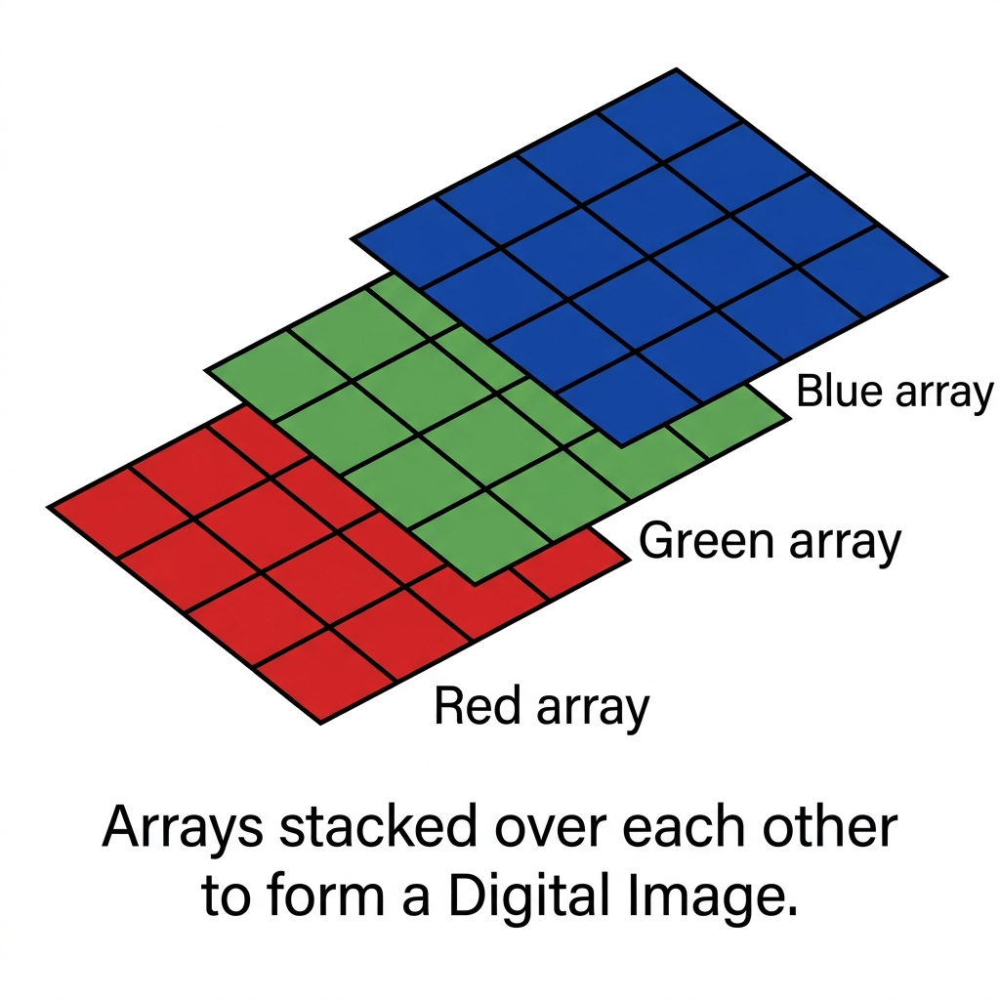

CSE 4833 — Digital Image Processing
United International University · Class Test Ready Notes
✦ A cozy space for deep learning ✦Introduction to Digital Images
From analog signals to discrete pixel arrays
1.1 What is a Digital Image?
An image is represented as a two-dimensional function f(x, y):
x and y are the spatial (plane) coordinates · f is the amplitude (intensity) at (x, y)
- 📠x and y are the spatial (plane) coordinates.
- 📠The amplitude of f at any pair of coordinates (x, y) is called the intensity or gray level of the image at that point.
- 🔢 It is composed of a finite number of elements called pixels (picture elements), each of which has a particular location and value.
Digital Image Definition: If x,
y, and the amplitude values of
f
are all finite and discrete quantities, we call the image a digital image.
ðŸ–¥ï¸ Image as a Matrix
In computers, images are represented as matrices of numbers organized in rows and columns.
This is the syntax for a digital image of size M × N:
M = rows, N = columns · x ∈ [0, M−1], y ∈ [0, N−1]
🔲 Rows & Columns
The matrix is composed of M rows and N columns.
🔵 Each element = pixel
Every element in this matrix is a picture element or pixel.
📊 8-bit value range
In an 8-bit image, every matrix position holds a value from 0 to 255.
🤖 How a Computer Sees Images
While we see smooth colors and shapes, the computer processes grids of digital numbers:
🩶 Grayscale
1 set of digits per pixel — e.g.,
11111111
representing intensity 255 (white).
🌈 RGB Image
3 sets of digits per pixel — 8 bits for Red, 8 bits for Green, and 8 bits for Blue.
1.2 Types of Digital Images — Pixel Depth
Images are classified based on the number of bits used to represent the intensity of each pixel: L = 2k intensity levels for k bits per pixel.
| Image Type / Format | Bits (k) | Levels / Colors | File Size (512×512) | Description & Usage |
|---|---|---|---|---|
| Binary Image | 1-bit | 2 (Black & White) | 32 KB | Contains only two pixel elements: 0 (Black) and 1 (White). Also known as a Monochrome or Bitmap image. |
| Black & White Image | 1-bit | 2 (Strict B&W) | 32 KB | Consists of strictly black and white colors, with no intermediate grays. Used for binary masks and simple graphics. |
| 4-bit | 4-bit | 16 | 128 KB | Very limited palette — used for icon images and early computer graphics. |
| 8-bit Color Format | 8-bit | 256 | 262 KB | The most common grayscale format. 0 = Black, 255 = White, 127 = medium gray. Standard for most applications. |
| 12-bit | 12-bit | 4,096 | 786 KB | High-dynamic range; used in medical imaging (MRI, CT scans) for fine tissue contrast. |
| 16-bit Color Format | 16-bit | 65,536 | 786 KB | Also called High Color Format. Can display up to 65,536 colors. Great for saving memory but limiting for professional graphics. |
| 24-bit Color Format | 24-bit | 16,777,216 | 786 KB | Also called True Color. Distributes 8 bits for Red (R), 8 for Green (G), 8 for Blue (B). The standard RGB color model. |
| 32-bit Color Format | 32-bit | >4.2 billion | 1 MB | Like 24-bit, but adds an extra 8-bit Alpha Channel for gradients, shadows, and transparency. Supports over 4.2 billion combinations. |
1.3 Grayscale Images
Example: A grayscale photograph — no color, only shades of gray
A grayscale image in DIP consists of pixels representing varying intensities of gray, typically ranging from 0 (black) to 255 (white) for 8-bit images. It contains no color data — each pixel stores a single intensity value.
Commonly Used Grayscale Formats:
Example 3×3 grayscale matrix:
$$f = \begin{bmatrix} 10 & 80 & 180 \\ 50 & 120 & 200 \\ 30 & 90 & 255 \end{bmatrix}$$1.4 RGB Color Images
An RGB image is a color representation using three channels (Red, Green, Blue) stored as a 3D array (height × width × 3). Each pixel requires 24 bits (8 bits per channel) for true color — over 16.7 million possible colors.

Three color planes stacked to form a single digital image
Key Aspects of RGB Images in DIP
🧱 Structure
Represented as m × n × 3 arrays — m = height, n = width, 3 = R, G, B planes.
🎨 Color Representation
Three separate monochromatic planes stacked together, each holding one channel's intensity.
📠Bit Depth
8 bits per channel → 256 levels/channel → 24-bit color image.
💻 Usage
Heavily used in OpenCV, monitors, cameras, and all standard DIP pipelines.
Each channel ∈ [0, 255] · Total colors = 256³ = 16,777,216
| Channel | Bit Depth | Value Range | Intensity Levels | Role |
|---|---|---|---|---|
| Red (R) | 8-bit | 0–255 | 256 | Controls red luminance per pixel |
| Green (G) | 8-bit | 0–255 | 256 | Controls green luminance per pixel |
| Blue (B) | 8-bit | 0–255 | 256 | Controls blue luminance per pixel |
| Combined (RGB) | 24-bit | 16.7M colors | 256³ = 16,777,216 | True color digital image |
1.5 Image Acquisition Pipeline
Sampling
Discretizes the spatial domain — determines the spatial resolution (how many pixels).
Quantization
Discretizes the amplitude — determines intensity resolution (how many gray levels).
1.6 Storage Requirements
M = rows, N = cols, k = bits per pixel
Grayscale 512×512 @ 8-bit
262,144 bytes
≈ 256 KB
RGB 512×512 @ 24-bit
786,432 bytes
≈ 768 KB
Medical 16×16 @ 3-bit
96 bytes
Only 8 gray levels!
Sampling, Quantization & Resolution
The mathematics of continuous-to-discrete conversion
2.1 Spatial Resolution
Spatial resolution defines how many pixels per unit area. It is measured in DPI (Dots Per Inch) or PPI (Pixels Per Inch). Higher DPI = more pixels = more detail captured.
Effect of Reducing Spatial Resolution
- â¬‡ï¸ Fewer pixels → Jagged lines (staircase effect)
- â¬‡ï¸ Fine details (tiny tumors) become invisible
- â¬‡ï¸ Objects lose shape fidelity
- ✅ Smaller file size
Jagged Lines (Aliasing)
When spatial resolution is too low, smooth diagonal edges appear as a "staircase" pattern because a coarser grid cannot represent fine angular detail.
2.2 Intensity Resolution
Intensity resolution defines how many distinct gray levels can be represented per pixel. It is determined by the number of bits per pixel (bit depth).
âš ï¸ False Contouring
When intensity resolution is too low (e.g., 2-bit = 4 levels), smooth gradients appear as abrupt bands of constant color — called false contours. This happens because nearby tones that should be slightly different are mapped to the same discrete level.
Example: An X-ray with only 3 bits (8 levels) cannot distinguish subtle density changes in tissue, leading to incorrect diagnosis due to loss of tissue contrast.
| Bits/pixel | Gray Levels | Tissue Contrast | Problem |
|---|---|---|---|
| 3-bit | 8 | Very Poor | False contouring, missed soft tissue differences |
| 8-bit | 256 | Good | Acceptable for most uses |
| 12-bit | 4096 | Excellent | Ideal for medical imaging (MRI, CT) |
2.3 Spatial vs. Intensity Resolution Tradeoff
- ✅ Captures fine spatial detail (edges, small structures)
- ✅ Less likely to miss tiny tumors due to high spatial res
- ⌠Only 3-bit = 8 gray levels
- ⌠False contouring — misses subtle intensity differences
- ⌠Cannot distinguish similar tissue types → wrong diagnosis
- ⌠Lower spatial resolution → coarser image
- ⌠More likely to miss tiny tumors (spatial detail lost)
- ✅ 12-bit = 4096 gray levels
- ✅ Excellent tissue contrast discrimination
- ✅ Less false contouring
💡 Which to Improve?
For detecting tiny tumors in MRI, improving intensity resolution (from 3-bit to higher) is the better investment. Tumors often have similar physical size but differ subtly in tissue density. The ability to distinguish these subtle intensity differences (contrast) is what makes MRI diagnostically useful. Spatial resolution matters for location, but contrast resolution determines if you can see the tumor at all.
2.4 Solved Example — Sampling Parameters
Problem:
An image has M=512, N=512 with 8 bits per pixel. Calculate: (a) total gray levels, (b) storage in bytes, (c) new storage if reduced to 4-bit.
Step 1 — Gray Levels
Step 2 — Storage at 8-bit
Step 3 — Storage at 4-bit (halved bit depth)
Gray levels drop from 256 → 16. File size halves but false contouring may appear!
Pixel Relationships & Adjacency
N4, ND, N8 neighborhoods and 4/8/m-adjacency rules
3.1 Pixel Neighborhoods
For a pixel p at location (x, y), we define three types of neighborhoods:
N4(p) — 4-Neighbors
Horizontal + Vertical only
ND(p) — Diagonal Neighbors
Diagonal only (4 corners)
N8(p) — 8-Neighbors
N4 + ND = All 8 neighbors
3.2 Types of Adjacency
Let V be the set of intensity values used to define adjacency. Two pixels are adjacent if they are neighbors and both have values in V.
Pixels p and q are 4-adjacent if q ∈ N4(p) AND both have values from V.
Pixels p and q are 8-adjacent if q ∈ N8(p) AND both have values from V. (More permissive — allows diagonal connections.)
Pixels p and q are m-adjacent if either:
- q ∈ N4(p) — they are 4-adjacent, OR
- q ∈ ND(p) AND N4(p) ∩ N4(q) has no pixels with values in V
Why m-adjacency?
8-adjacency can create ambiguous paths — multiple paths between two pixels. m-adjacency eliminates this ambiguity by preferring 4-neighbors when possible. It only uses diagonal connections when the 4-neighbor path does NOT already pass through a V-valued pixel.
3.3 m-Adjacency Worked Example
V = {1}, Grid:
Case (i): Are b and c m-adjacent?
b=(0,1), c=(0,2). Is c in N4(b)? Yes — they are horizontal neighbors. ∴ Condition 1 satisfied.
✅ b and c ARE m-adjacent
Case (ii): Are b and e m-adjacent?
b=(0,1), e=(1,1). Is e in N4(b)? Yes — vertical neighbor. ∴ Condition 1 satisfied.
✅ b and e ARE m-adjacent
Case (iii): Are e and i m-adjacent?
e=(1,1), i=(2,2). Is i in N4(e)? No. Is i in ND(e)? Yes (diagonal). Check N4(e)∩N4(i)={f=(1,2), h=(2,1)}. Do f or h have values in V={1}? f=0, h=0. No.
✅ e and i ARE m-adjacent (via diagonal, no V-valued pixel in shared N4)
Case (iv): Are e and c m-adjacent?
e=(1,1), c=(0,2). Is c in N4(e)? No. Is c in ND(e)? Yes (diagonal). Check N4(e)∩N4(c)={b=(0,1)}. Does b have value in V={1}? Yes! b=1.
⌠e and c are NOT m-adjacent (the diagonal path is blocked because a V-pixel exists in shared neighborhood)
3.4 Applications of Adjacency
🥠Object Segmentation
Determines which pixels belong to the same object. In medical imaging, decides if scattered cells form one tumor or multiple.
📠Edge Detection
Identifies boundaries between objects by checking pixel connectivity. Example: finding lips vs skin boundary.
🔇 Noise Removal
Isolates noisy pixels (salt-and-pepper noise) by checking if they're disconnected from meaningful regions.
🤖 Pathfinding
Robots use adjacency to navigate maps — 4-connected vs 8-connected paths have different shortest-path results.
🔷 Morphological Ops
Dilation and erosion operations depend on adjacency to define how shapes grow or shrink.
🌊 Connected Components
Flood-fill algorithms, blob detection, and region labeling all rely on pixel adjacency definitions.
Artificial Neural Networks in DIP
Architecture, activation functions, forward propagation & loss
4.1 ANN Architecture
An Artificial Neural Network consists of interconnected layers of neurons. Each connection has a weight and each neuron has a bias and an activation function.
z = weighted sum (pre-activation), a = activated output, g = activation function, w = weight, b = bias
4.2 Activation Functions
- ✅ Output always between 0 and 1 — good for probability
- ✅ Smooth, differentiable everywhere
- ⌠Vanishing gradient for very large/small inputs (saturates)
- 📌 Used in output for binary classification
- ✅ No vanishing gradient for positive values
- ✅ Computationally cheap
- ✅ Most widely used in deep/CNN models
- ⌠"Dying ReLU" — neurons can get stuck at 0
- ✅ Outputs sum to 1 — interpretable as class probabilities
- ✅ Ideal for multi-class classification (K > 2 classes)
- ✅ Unlike other activation functions, Softmax operates on ALL output neurons simultaneously
- 📌 Q3 Answer: Softmax differs from Sigmoid/ReLU/Tanh because it considers ALL outputs together to produce a probability distribution. Other functions operate independently on each neuron.
- ✅ Zero-centered (unlike Sigmoid)
- ✅ Range (−1, 1) — useful when negative outputs matter
- ⌠Still suffers from vanishing gradient at extremes
4.3 Forward Propagation Algorithm
Step 1 — Initialize
Set input activations: a = [xâ‚, xâ‚‚, ..., xâ‚™]
Step 2 — For each layer l
Step 3 — Apply activation
Step 4 — Output is final layer's activation
Å· = a[L] (predicted output)
Step 5 — Compute Loss
4.4 Loss Functions
Binary Cross-Entropy (Log Loss)
Per output neuron. y = actual, o = predicted.
Categorical Cross-Entropy
Used with Softmax for multi-class output.
4.5 Keras Sequential API — Quick Reference
# Import
from tensorflow.keras.models import Sequential
from tensorflow.keras.layers import Dense
# Build model
model = Sequential([
Dense(units=4, activation='sigmoid', input_dim=3), # Hidden L1
Dense(units=3, activation='relu'), # Hidden L2
Dense(units=2, activation='softmax') # Output
])
# Compile
model.compile(optimizer='adam',
loss='binary_crossentropy',
metrics=['accuracy'])
# Train
model.fit(X_train, y_train, batch_size=10, epochs=100)
# Predict
y_pred = model.predict(X_test)Class Test Analysis & Practice Set
CT1 solutions + 5 practice problems modeled after exam style
Q1 [6 marks] — Medical Imaging: Spatial vs Intensity Resolution
Prototype 1: Very high spatial res, only 3-bit per pixel (8 gray levels)
Prototype 2: Lower spatial res, 12-bit per pixel (4096 gray levels)
(i) Which is more likely to miss detecting tiny tumors? [2]
Answer: Prototype 2 (lower spatial resolution). Tiny tumors occupy very few pixels. With coarser spatial resolution, the tumor may span less than 1 pixel and become invisible — it literally gets averaged away. Spatial resolution determines the minimum detectable feature size.
💡 Key insight: High spatial res = more pixels per area = finer detail captured = tiny structures visible.
(ii) Which causes incorrect diagnosis due to loss of tissue contrast? [2]
Answer: Prototype 1 (3-bit = only 8 gray levels). MRI distinguishes tissue types by subtle differences in signal intensity. With only 8 levels, many different tissues get mapped to the same gray value — false contouring — making it impossible to distinguish healthy from cancerous tissue. This directly causes misdiagnosis.
(iii) Which parameter would you improve? [2]
Answer: Improve Intensity Resolution (increase bits per pixel).
Justification: For tumor detection in MRI, the core challenge is
distinguishing tumor tissue from surrounding healthy tissue — they often have nearly identical
physical sizes but differ in signal density. 3-bit depth (8 levels) is
catastrophically inadequate for medical use. Going to even 8-bit (256 levels) dramatically
improves diagnostic accuracy. Spatial resolution can compensate somewhat via zoom/magnification
post-processing, but you cannot recover lost intensity information once quantized to 8 levels.
Q2 [2 marks] — 16×16 Image → ANN Design
Dataset: 16×16 pixel images where each pixel is a feature. Goal: classify into 5 categories.
Input neurons:
Each pixel is one feature → one input neuron per pixel.
Output neurons:
Activation function for output:
Softmax — because this is a multi-class classification problem (5 classes). Softmax converts the raw output scores into a probability distribution over 5 classes that sums to 1. We pick the class with highest probability.
Q3 [2 marks] — How does Softmax differ from other activation functions?
| Property | Sigmoid/ReLU/Tanh | Softmax |
|---|---|---|
| Operates on | Single neuron independently | All output neurons together |
| Output range | (0,1) or (0,∞) or (-1,1) | All outputs sum to 1 |
| Interpretation | Individual activation level | Probability distribution |
| Use case | Hidden layers, binary output | Multi-class output layer |
Key sentence: Unlike Sigmoid/ReLU which treat each neuron independently, Softmax normalizes all outputs relative to each other — making it the only activation that models a probability distribution across multiple classes.
Q4 [10 marks] — ANN Forward Propagation + Loss
Architecture: 3→4(Sigmoid)→3(ReLU)→2(Softmax). Inputs: [0.45, 0.25, 0.15]. Actual: [1.0, 0.0]
Layer 1 Weights (Input→H1)
| Connection | Weight |
|---|---|
| i1→h1 | 0.25 |
| i2→h1 | 0.35 |
| i3→h1 | 0.15 |
| i1→h2 | 0.20 |
| i2→h2 | 0.30 |
| i3→h2 | 0.10 |
| i1→h3 | 0.40 |
| i2→h3 | 0.10 |
| i3→h3 | 0.45 |
| i1→h4 | 0.30 |
| i2→h4 | 0.50 |
| i3→h4 | 0.20 |
Layer 2 Weights (H1→H2)
| Connection | Weight |
|---|---|
| h1→j1 | 0.15 |
| h2→j1 | 0.30 |
| h3→j1 | 0.20 |
| h4→j1 | 0.25 |
| h1→j2 | 0.25 |
| h2→j2 | 0.40 |
| h3→j2 | 0.15 |
| h4→j2 | 0.60 |
| h1→j3 | 0.45 |
| h2→j3 | 0.35 |
| h3→j3 | 0.55 |
| h4→j3 | 0.25 |
Layer 3 Weights (H2→Output)
| Connection | Weight |
|---|---|
| j1→o1 | 0.40 |
| j2→o1 | 0.30 |
| j3→o1 | 0.10 |
| j1→o2 | 0.50 |
| j2→o2 | 0.25 |
| j3→o2 | 0.30 |
📊 STEP 1 — Hidden Layer 1 (Sigmoid)
Formula: z = Σ(wáµ¢ × xáµ¢), then a = σ(z) = 1/(1+eâ»á¶»)
Neuron h1:
Neuron h2:
Neuron h3:
Neuron h4:
Hidden Layer 1 Outputs (Sigmoid):
a_h1=0.5554, a_h2=0.5449, a_h3=0.5677, a_h4=0.5720
📊 STEP 2 — Hidden Layer 2 (ReLU)
Formula: z = Σ(wᵢ × aᵢ), then a = ReLU(z) = max(0, z)
Neuron j1:
Neuron j2:
Neuron j3:
Hidden Layer 2 Outputs (ReLU):
a_j1=0.5033, a_j2=0.7852, a_j3=0.8959
📊 STEP 3 — Output Layer (Softmax)
First compute pre-activations z, then apply Softmax across all outputs
Pre-activations z_o1 and z_o2:
Softmax:
Final Output:
Å· = [o1=0.4526, o2=0.5474]
Network predicts class 2 with 54.7% probability (but actual is class 1!)
📊 STEP 4 — Log Loss Calculation
Formula: Log Loss = −yᵢ·log(o_outᵢ) − (1−yᵢ)·log(1−o_outᵢ)
Actual: y=[1.0, 0.0], Predicted: Å·=[0.4526, 0.5474]
Loss for Output 1 (yâ‚=1.0, oâ‚=0.4526):
Since y=1, second term vanishes. Loss penalizes low predicted probability for the true class.
Loss for Output 2 (yâ‚‚=0.0, oâ‚‚=0.5474):
Since y=0, first term vanishes. Loss penalizes high predicted probability for a false class.
Interpretation: The loss of 1.5874 is relatively high because the network predicted the wrong class (o2 > o1 but y1=1, y2=0). After training, weights would be updated via backpropagation to reduce this loss.
A company is developing a satellite imaging system. Prototype A captures 4096×4096 pixel images with only 2-bit intensity. Prototype B captures 1024×1024 images with 16-bit intensity.
(i) Which prototype is better for detecting thin roads? [2]
(ii) Which is better for classifying land-use types (forest vs urban vs water)? [2]
(iii) What artifact will appear in Prototype A's images? Explain. [2]
â–¶ Show Solution
(i) Thin roads → Prototype A
Roads are narrow structures requiring fine spatial detail. Prototype A's 4096×4096 spatial resolution captures sub-meter detail. Prototype B's 1024×1024 may cause thin roads to disappear.
(ii) Land-use classification → Prototype B
Forest, urban, and water differ in spectral reflectance intensity. 16-bit = 65,536 levels provides excellent discrimination. 2-bit = only 4 levels — forest and water may map to the same level!
(iii) Artifact in Prototype A → False Contouring
With only 4 levels, smooth intensity gradients (e.g., sunrise lighting on terrain) will appear as abrupt bands — false contours — making natural features look artificially stepped.
Given the following 3×3 image with V = {1, 2}:
Label positions as a(0,0), b(0,1), c(0,2), d(1,0), e(1,1), f(1,2), g(2,0), h(2,1), i(2,2).
(i) Are a and e m-adjacent? (ii) Are c and e m-adjacent? (iii) Are a and c m-adjacent?
â–¶ Show Solution
(i) a(val=2) and e(val=2) — m-adjacent?
Both in V={1,2}. Is e in N4(a)? No (diagonal). Is e in ND(a)? Yes. Check N4(a)∩N4(e) = {b(0), d(0)}. b=0, d=0 — neither in V. ∴ Condition 2 satisfied.
✅ a and e ARE m-adjacent
(ii) c(val=1) and e(val=2) — m-adjacent?
Both in V. Is e in N4(c)? No. Is e in ND(c)? Yes. Check N4(c)∩N4(e) = {b(0), f(0)}. b=0, f=0 — not in V. ∴ Condition 2 satisfied.
✅ c and e ARE m-adjacent
(iii) a(val=2) and c(val=1) — m-adjacent?
Both in V. Is c in N4(a)? No. Is c in ND(a)? No (not diagonal neighbors — they are in the same row but 2 apart). c is at (0,2), a is at (0,0). Not even in N8(a). ∴ Neither condition applies.
⌠a and c are NOT m-adjacent (not in each other's neighborhood)
You are building a medical image classification system for MRI scans. Each scan is 32×32 pixels.
The system must classify into 3 disease categories: "Healthy", "Stage 1", "Stage 2".
(i) How many neurons in the input and output layer? [1]
(ii) Which activation for the output layer and why? [1]
(iii) A developer suggests using Sigmoid in the output instead. What problem would this cause? [2]
â–¶ Show Solution
(i) Neuron count
(ii) Output activation → Softmax
Softmax is correct because: (a) outputs sum to 1.0, interpretable as probabilities, (b) designed for mutually exclusive multi-class problems, (c) forces competition between classes.
(iii) Problem with Sigmoid on 3-class output
Sigmoid treats each output independently. The three outputs could all be 0.8, 0.9, 0.7 — summing to 2.4, which is meaningless as a probability distribution. You cannot determine which class is "most likely" without additional normalization. The outputs don't compete with each other, so the model can simultaneously predict all classes as highly probable — an incoherent result.
Consider a simple ANN: Input [x1=0.5, x2=0.3], one hidden neuron h1 (Sigmoid), one output o1 (Sigmoid).
Weights: w(x1→h1)=0.6, w(x2→h1)=0.4, w(h1→o1)=0.8. No biases.
Actual output: y=1.
(i) Calculate h1 output [2] (ii) Calculate o1 output [2] (iii) Calculate log loss [2]
â–¶ Show Solution
(i) Hidden neuron h1
(ii) Output neuron o1
(iii) Log Loss (y=1, Å·=0.6183)
Lower than CT Q4's loss because the prediction (0.618) is closer to the correct label (1) than in Q4 (0.453).
(i) A grayscale image has 1024×768 resolution at 8-bit depth. Calculate the total number of pixels, gray levels, and file size in KB. [2]
(ii) The same image is converted to binary (1-bit). What visual artifact might appear on diagonal edges? [2]
(iii) In pixel adjacency, why is m-adjacency preferred over 8-adjacency for path tracing? [2]
â–¶ Show Solution
(i) Image parameters
(ii) 1-bit binary → Jagged Lines (Aliasing)
Diagonal edges that were smooth in 8-bit become jagged staircase patterns. With only 2 intensity levels (0 or 1), fine angular information is lost — pixels can only be fully ON or OFF, so curves and diagonals appear as staircases. This is spatial aliasing from extreme quantization.
(iii) m-adjacency vs 8-adjacency for path tracing
8-adjacency allows multiple paths between two pixels (via both N4 and ND neighbors), creating path ambiguity. Two pixels may have more than one shortest path, making algorithms like flood-fill or segmentation non-deterministic. m-adjacency eliminates this by using diagonal connections ONLY when no 4-neighbor alternative exists, guaranteeing a unique, unambiguous path between connected pixels.
⚡ Quick Cheatsheet — CT Formula Sheet
Image Fundamentals
- Gray Levels: $L = 2^k$
- Storage: $\frac{M \times N \times k}{8}$ bytes
- Total Pixels: $M \times N$
Activation Functions
- Sigmoid: $\frac{1}{1+e^{-z}}$, range (0,1)
- ReLU: $\max(0,z)$, range $[0,\infty)$
- Softmax: $\frac{e^{z_k}}{\sum e^{z_j}}$, sums to 1
- Tanh: $\frac{e^z-e^{-z}}{e^z+e^{-z}}$, range (-1,1)
Adjacency Rules (V = intensity set)
- 4-adj: q ∈ N4(p) and f(q) ∈ V
- 8-adj: q ∈ N8(p) and f(q) ∈ V
- m-adj: q ∈ N4(p) OR [q ∈ ND(p) and N4(p)∩N4(q)∩V=∅]
Loss & ANN
- Forward: $z = \sum w_i a_i$, then $a = g(z)$
- Log Loss: $-y\log(o) - (1-y)\log(1-o)$
- Input nodes = image pixels (M×N)
- Output nodes = number of classes